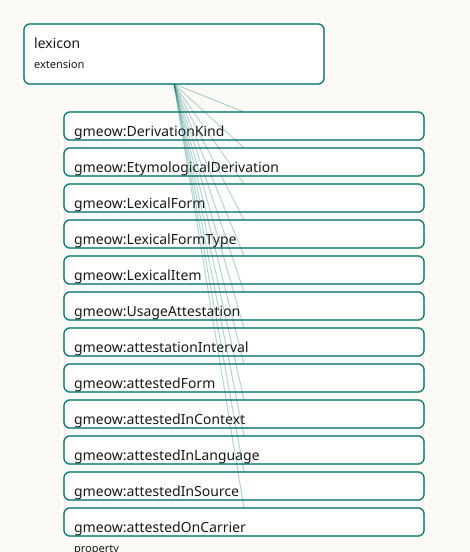

GMEOW Lexicon Module
- IRI: https://blackcatinformatics.ca/gmeow/slices/lexicon
- Tier: extension
Group: extensions
What This Slice Covers
This slice owns 43 terms and contributes 13 mapping or projection rows. Use it when its terms match the native fact you want to preserve; use the linkage tables to see how those facts leave GMEOW for consumer vocabularies.
Dependencies
gmeow:slices/documentsgmeow:slices/kernelgmeow:slices/languagegmeow:slices/observationsgmeow:slices/temporal
Consumers
- Lexical items and attestations for the language family; archaeological readings.
Local Map

Terms
Classes
| Term | Label | Definition |
|---|---|---|
gmeow:DerivationKind |
Derivation Kind | The kind of etymological derivation — a value, never an Entity subclass. Open-ended: new historical-linguistic frameworks may introduce further derivation type... |
gmeow:EtymologicalDerivation |
Etymological Derivation | A provenance-rich claim about historical derivation between lexical items or forms. Not a flat property — a full relator carrying standpoint (accordingTo), con... |
gmeow:LexicalForm |
Lexical Form | A concrete form of a lexical item — written, spoken, signed, rendered, reconstructed, normalized, transliterated, or translated. The surface representation is... |
gmeow:LexicalFormType |
Lexical Form Type | The kind of a lexical form — a value, never an Entity subclass. The seed list is an anchor, not a fence; new analytical frameworks may introduce further form t... |
gmeow:LexicalItem |
Lexical Item | The abstract lexical or constructional object: a word, morpheme, phrase, idiom, symbol, sign, or construction. Carries no surface form itself; forms are linked... |
gmeow:UsageAttestation |
Usage Attestation | An evidence node recording that a lexical form, reading, inscription, symbol, construction, or usage was observed in a source or context. Evidence, not truth:... |
Properties
| Term | Label | Definition |
|---|---|---|
gmeow:attestationInterval |
attestation interval | The time interval over which the attested usage is asserted to have been observed — e.g. a corpus span, an inscription period, or a community usage era. A rela... |
gmeow:attestedForm |
attested form | The lexical form that a usage attestation observes. Functional per relator: one attested form per UsageAttestation. |
gmeow:attestedInContext |
attested in context | The corpus, platform, community, dataset, inscription, or broader context in which the attested form was observed. NON-FUNCTIONAL: a form may be attested in mu... |
gmeow:attestedInLanguage |
attested in language | The language, variety, or state in which the attested form was observed. NON-FUNCTIONAL: a multilingual source may attest the same form in multiple language co... |
gmeow:attestedInSource |
attested in source | The bibliographic or documentary source in which the attested form was observed. NON-FUNCTIONAL: an attestation may be supported by multiple sources, and compe... |
gmeow:attestedOnCarrier |
attested on carrier | The physical archaeological carrier on which an attested form was observed — a tablet, ostracon, seal, coin, manuscript, or wall. NON-FUNCTIONAL: an attestatio... |
gmeow:derivationEvidence |
derivation evidence | The usage attestations, sources, or other evidence supporting a derivation claim. NON-FUNCTIONAL: a derivation may be supported by multiple evidence nodes, and... |
gmeow:derivationKind |
derivation kind | The kind(s) of etymological derivation claimed — borrowing, calque, semantic shift, sound change, etc. NON-FUNCTIONAL: a single derivation may be classified as... |
gmeow:derivationTarget |
derivation target | The descendant lexical item or form that is derived from the source. Functional per relator: one target per EtymologicalDerivation. |
gmeow:formOf |
form of | The lexical item that a form is a form of — the inverse of gmeow:hasLexicalForm. |
gmeow:formRepresentation |
form representation | The actual string or value of a lexical form — the written text, IPA transcription, sign notation, or reconstructed string. Functional: one representation per... |
gmeow:formTransliterationScheme |
form transliteration scheme | The transliteration scheme applied to produce this form, when applicable. NON-FUNCTIONAL: a form may be the product of multiple schemes in different analytical... |
gmeow:formType |
form type | The kind(s) of a lexical form — written, spoken, signed, reconstructed, etc. NON-FUNCTIONAL: a single form may be classified as both spoken and written by diff... |
gmeow:hasLexicalForm |
has lexical form | The concrete form(s) of a lexical item. NON-FUNCTIONAL: a single item may have many forms (written, spoken, reconstructed, etc.), and competing form claims fro... |
gmeow:lexicalItemLanguage |
lexical item language | The primary language of a lexical item. Functional: one language per item (polyglot items are modeled as separate items linked by translation). |
Individuals
| Term | Label | Definition |
|---|---|---|
gmeow:derivationAffixation |
affixation | Formation of a lexical item by attaching a bound morpheme to a stem. |
gmeow:derivationBackFormation |
back-formation | Creation of a new lexical item by removing a supposed affix from an existing form. |
gmeow:derivationBorrowing |
borrowing | Adoption of a lexical item from a donor language into a recipient language. |
gmeow:derivationCalque |
calque | Loan translation: borrowing of semantic structure mapped onto native morphological material. |
gmeow:derivationClipping |
clipping | Shortening of a lexical item by omitting one or more syllables. |
gmeow:derivationCompounding |
compounding | Formation of a lexical item by combining two or more existing lexical items. |
gmeow:derivationFolkEtymology |
folk etymology | Popular reinterpretation of an opaque form as semantically transparent. |
gmeow:derivationInheritance |
inheritance | Direct transmission of a lexical item from an ancestor language without structural change. |
gmeow:derivationReanalysis |
reanalysis | Reinterpretation of the morphological structure of a lexical item by speakers. |
gmeow:derivationReconstruction |
reconstruction | Hypothesised ancestral form derived by historical-comparative methods. |
gmeow:derivationSemanticShift |
semantic shift | Change in the meaning of a lexical item while its form remains stable. |
gmeow:derivationSoundChange |
sound change | Systematic phonological alteration affecting a lexical item within a language community. |
gmeow:derivationSpellingChange |
spelling change | Orthographic reform or convention shift altering the written form without phonological change. |
gmeow:derivationUnknownOrigin |
unknown origin | No satisfactory etymological account is available for the lexical item. |
gmeow:formNormalized |
normalized | Lexical form in a normalised or canonical orthographic shape. |
gmeow:formReconstructed |
reconstructed | Lexical form hypothesised by historical-comparative reconstruction. |
gmeow:formRendered |
rendered | Lexical form in a specific rendering or typographic presentation. |
gmeow:formSigned |
signed | Lexical form represented in sign-language or gestural modality. |
gmeow:formSpoken |
spoken | Lexical form represented in spoken or auditory modality. |
gmeow:formTranslated |
translated | Lexical form representing a translation equivalent. |
gmeow:formTransliterated |
transliterated | Lexical form rendered through a transliteration scheme. |
gmeow:formWritten |
written | Lexical form represented in written modality. |
Linkages
- Rows: 13
- Projection profiles:
ontolex - External vocabularies:
lime,ontolex,prov,rdf,wd
| Source | Kind | Profile | Predicate/Relation | Target | Evidence |
|---|---|---|---|---|---|
gmeow:EtymologicalDerivation |
equivalence | - |
skos:closeMatch | prov:Derivation | gmeow-lexicon.sssom.tsv; gmeow:eqLexicon007; confidence 0.75 |
gmeow:LexicalForm |
equivalence | - |
skos:broadMatch | ontolex:Form | gmeow-lexicon.sssom.tsv; gmeow:eqLexicon002; confidence 0.85 |
gmeow:LexicalItem |
equivalence | - |
skos:broadMatch | ontolex:LexicalEntry | gmeow-lexicon.sssom.tsv; gmeow:eqLexicon001; confidence 0.85 |
gmeow:LexicalItem |
equivalence | - |
skos:closeMatch | wd:Q181970 | gmeow-lexicon.sssom.tsv; gmeow:eqLexicon009; confidence 0.7 |
gmeow:UsageAttestation |
equivalence | - |
skos:closeMatch | prov:Entity | gmeow-lexicon.sssom.tsv; gmeow:eqLexicon006; confidence 0.8 |
gmeow:formRepresentation |
equivalence | - |
skos:closeMatch | ontolex:writtenRep | gmeow-lexicon.sssom.tsv; gmeow:eqLexicon004; confidence 0.8 |
gmeow:hasLexicalForm |
equivalence | - |
skos:closeMatch | ontolex:lexicalForm | gmeow-lexicon.sssom.tsv; gmeow:eqLexicon003; confidence 0.9 |
gmeow:lexicalItemLanguage |
equivalence | - |
skos:closeMatch | lime:language | gmeow-lexicon.sssom.tsv; gmeow:eqLexicon005; confidence 0.85 |
gmeow:LexicalForm |
projection | ontolex |
projects to / <= | ontolex:Form, ontolex:writtenRep, rdf:type | gmeow:mapOntolexLexicalForm; lossy: formType, transliteration scheme, spoken/reconstructed form kinds |
gmeow:LexicalItem |
projection | ontolex |
projects to / <= | lime:language, ontolex:LexicalEntry, rdf:type | gmeow:mapOntolexLexicalItem; lossy: hasLexicalForm links, form representations, etymology |
gmeow:formRepresentation |
projection | ontolex |
projects to / <= | ontolex:Form, ontolex:writtenRep, rdf:type | gmeow:mapOntolexLexicalForm; lossy: formType, transliteration scheme, spoken/reconstructed form kinds |
gmeow:hasLexicalForm |
projection | ontolex |
projects to / <= | ontolex:lexicalForm | gmeow:mapOntolexLexicalItemFormLink; lossy: form representations, etymology |
gmeow:lexicalItemLanguage |
projection | ontolex |
projects to / <= | lime:language, ontolex:LexicalEntry, rdf:type | gmeow:mapOntolexLexicalItem; lossy: hasLexicalForm links, form representations, etymology |
Guide
GMEOW Lexicon Mapping
Mapping target: OntoLex-Lemon, LIME, Lexicog, Morph, FrAC, SKOS/SKOS-XL, PROV-O, Web
Annotation, CRMinf
GMEOW's lexicon module provides first-class modeling for lexical items, concrete forms, usage attestations, and etymological derivations. It builds on the language-state/variety layer and the universal observation stack.
LexicalItem & LexicalForm
A LexicalItem is the abstract lexical or constructional object — a word, morpheme, phrase, idiom, symbol, sign, or construction. It carries no surface form itself; forms are linked via hasLexicalForm.
A LexicalForm is a concrete manifestation: written, spoken, signed, rendered, reconstructed, normalized, transliterated, or translated. The surface representation is formRepresentation; the kind is a LexicalFormType value.
ex:cat a gmeow:LexicalItem ;
gmeow:lexicalItemLanguage ex:english ;
gmeow:hasLexicalForm ex:catWritten, ex:catSpoken, ex:catReconstructed .
ex:catWritten a gmeow:LexicalForm ;
gmeow:formRepresentation "cat" ;
gmeow:formType gmeow:formWritten .
ex:catSpoken a gmeow:LexicalForm ;
gmeow:formRepresentation "/kæt/" ;
gmeow:formType gmeow:formSpoken .
ex:catReconstructed a gmeow:LexicalForm ;
gmeow:formRepresentation "*kattōn" ;
gmeow:formType gmeow:formReconstructed .
A single lexical item may have many coexisting forms. None is privileged (Principle 9). Polyglot items are modeled as separate LexicalItem instances linked by translation, each with its own lexicalItemLanguage.
OntoLex alignment
LexicalItemaligns toontolex:LexicalEntryby reference.LexicalFormaligns toontolex:Formby reference.formRepresentationaligns toontolex:writtenRepfor written forms (lossy for spoken/reconstructed).hasLexicalFormaligns toontolex:lexicalForm.
The projection layer handles the directional mapping; the ontology module does not import OntoLex axioms (Principle 5).
UsageAttestation — evidence, not truth
Attestationrecords that a form was observed; it does not assert that a proposed interpretation is correct.
UsageAttestation is an Observation + Relator that records evidence: a form was seen in a source, a corpus, an inscription, a platform, or a community. It is evidence, not truth (Principle 12). Interpretation — reading, translation, etymology — lives in the claim layer, not the evidence layer.
ex:yeetAttestation a gmeow:UsageAttestation ;
gmeow:attestedForm ex:yeetSpoken ;
gmeow:attestedInLanguage ex:english ;
gmeow:attestedInSource ex:twitterCorpus2020 ;
gmeow:attestedInContext ex:genZCommunity ;
gmeow:attestationInterval ex:yeetInterval ;
gmeow:confidence 0.95 .
Because UsageAttestation is an Observation, it inherits the universal claim stack: vantage (who asserts the attestation), observedFeature (the attested form, via attestedForm ⊑ observedFeature), confidence, validFrom/validUntil, and assertedAt. Temporal interpretation and evidence evaluation live in the SPARQL/query layer, not the reasoner (Principle 12).
Etymology as a claim graph
Etymology is not a flat origin string. It is a graph of provenance-rich, standpointed claims.
EtymologicalDerivation is an Observation + Relator linking a source lexical item/form to a target lexical item/form, carrying:
derivationKind— borrowing, calque, semantic shift, sound change, compounding, etc.derivationEvidence— supportingUsageAttestationorSourcenodesconfidence,accordingTo,validFrom/validUntil— inherited fromObservation
Multiple derivations for the same target coexist without privilege (Principle 9). A superseded derivation is suppressed with displayable false, never erased (Principle 10).
ex:derivationAlgebraBorrowing a gmeow:EtymologicalDerivation ;
gmeow:derivationSource ex:alJabr ;
gmeow:derivationTarget ex:algebra ;
gmeow:derivationKind gmeow:derivationBorrowing ;
gmeow:confidence 0.85 .
ex:ax-derivation-borrowing a owl:Axiom ;
owl:annotatedSource ex:derivationAlgebraBorrowing ;
owl:annotatedProperty gmeow:derivationKind ;
owl:annotatedTarget gmeow:derivationBorrowing ;
gmeow:accordingTo ex:standpoint-etymologist-a ;
gmeow:confidence 0.85 ;
gmeow:validFrom "0800-01-01T00:00:00Z"^^xsd:dateTime .
Reconstructed proto-forms
A reconstructed form (e.g. PIE *wódr̥) is a LexicalForm with formType gmeow:formReconstructed. Its status as a reconstruction — not a universally accepted truth — is recorded via standpoint-indexed owl:Axiom reifiers:
ex:pieWaterForm a gmeow:LexicalForm ;
gmeow:formRepresentation "*wódr̥" ;
gmeow:formType gmeow:formReconstructed .
ex:ax-reconstruction-claim a owl:Axiom ;
owl:annotatedSource ex:pieWaterForm ;
owl:annotatedProperty gmeow:formType ;
owl:annotatedTarget gmeow:formReconstructed ;
gmeow:accordingTo ex:standpoint-linguist-reconstructionist ;
gmeow:confidence 0.70 ;
gmeow:standpointModality gmeow:probable .
The reconstruction is a standpointed claim with modality probable, not an axiom of the universal standpoint.
One attestation, multiple readings
A single UsageAttestation (an oracle bone inscription) can support two competing LexicalForm readings. Each reading is a separate standpointed claim via wasDerivedFrom + owl:Axiom reifier:
ex:readingA a gmeow:LexicalForm ;
gmeow:formRepresentation "reading-A (sun)" ;
gmeow:formType gmeow:formNormalized ;
gmeow:wasDerivedFrom ex:oracleBoneInscription .
ex:ax-reading-a a owl:Axiom ;
owl:annotatedSource ex:readingA ;
owl:annotatedProperty gmeow:wasDerivedFrom ;
owl:annotatedTarget ex:oracleBoneInscription ;
gmeow:accordingTo ex:standpoint-epigrapher-a ;
gmeow:confidence 0.80 .
The attestation is evidence; the reading is interpretation. The separation is structural, not merely conventional (Principle 12).
Projection roadmap
| GMEOW term | Target vocabulary | Status |
|---|---|---|
LexicalItem |
ontolex:LexicalEntry |
Implemented |
LexicalForm |
ontolex:Form |
Implemented |
formRepresentation |
ontolex:writtenRep |
Implemented (lossy for non-written) |
hasLexicalForm |
ontolex:lexicalForm |
Implemented |
lexicalItemLanguage |
lime:language |
Implemented |
UsageAttestation |
prov:Entity / oa:Annotation |
Staged |
EtymologicalDerivation |
prov:Derivation / CRMinf |
Staged |
LexicalFormType |
skos:Concept |
Staged |
DerivationKind |
skos:Concept |
Staged |
| Frequency data | frac:Frequency |
Staged |
| Morphological analysis | morph:Morph |
Staged |
| Lexicographic resources | lexicog:LexicographicResource |
Staged |
Full Lexicog, Morph, FrAC, SKOS-XL, Web Annotation, and CRMinf projections are documented but staged for future work.